Лабораторная работа №6: Очистка и трансформация данных. pandas (P3124)¶
Ссылка на Google Colab Ноутбук¶
🔗 Выполненный Google Colab Ноутбук (режим просмотра)
1. Введение¶
Целью данной лабораторной работы является изучение и практическое применение методов очистки и трансформации данных с использованием библиотеки pandas на языке Python. В качестве исходных данных используется классический датасет пассажиров «Титаника» (titanic.csv), содержащий пропуски, неструктурированные текстовые поля и выбросы.
Основные задачи: * Загрузка набора данных и проведение первичного анализа. * Обнаружение и обработка пропущенных значений в признаках различных типов. * Трансформация существующих признаков и конструирование новых (Feature Engineering). * Обнаружение и обработка статистических выбросов. * Проведение группировки, агрегации данных и построение сводных таблиц для извлечения полезных инсайтов. * Визуализация распределений и взаимосвязей между признаками.
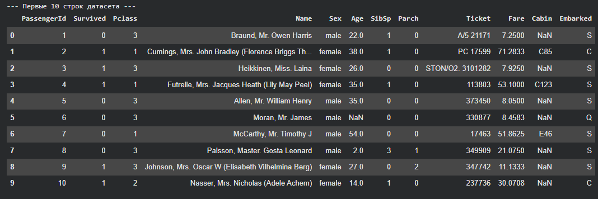
2. Первичный анализ¶
На этапе первичного анализа были исследованы структура набора данных, типы данных каждого столбца, общее количество записей и наличие пропущенных значений.
Основные результаты этапа:
* Типы данных: датасет состоит из числовых признаков (int64, float64) и категориальных/текстовых объектов (object).
* Пропущенные значения: обнаружены значительные пропуски в столбцах Age (возраст) — 177, Cabin (номер кабины) — 687 и незначительные в Embarked (порт посадки) — 2.
* Описательная статистика: получены ключевые показатели распределения числовых признаков (среднее, стандартное отклонение, квартили, минимум и максимум).
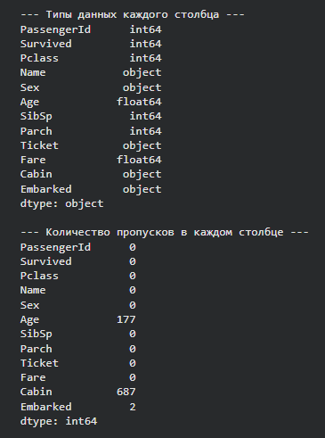
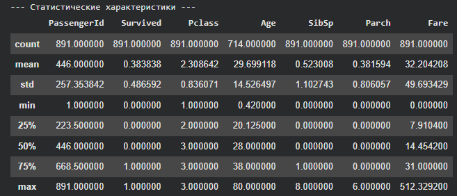
Для визуализации распределения числовых признаков до обработки были построены гистограммы для каждого из столбцов. Они наглядно демонстрируют скошенность распределений (особенно для признаков Fare и Age) и масштаб признаков.
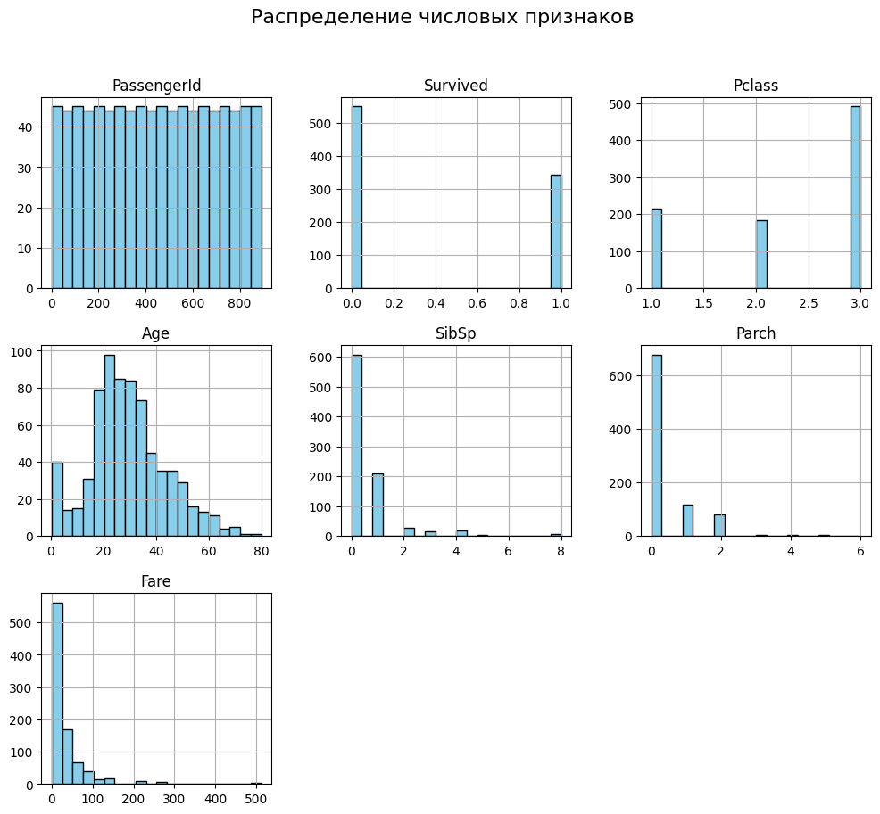
3. Обработка пропусков¶
Пропуски в данных могут существенно ухудшить качество прогнозных моделей. На данном этапе была проведена интеллектуальная импутация пропущенных значений:
- Возраст (
Age): Пропущенные значения заполнены медианным возрастом (28.0 лет), так как медиана устойчива к влиянию выбросов (среднее значение составило 29.70 лет). На основе заполненного признака создан новый категориальный признакAge_groupсо следующими интервалами: Child(0–12 лет)Teenager(12–18 лет)Adult(18–60 лет)Senior(60–120 лет)- Порт посадки (
Embarked): Пропущенные значения заполнены самым частым значением (модой), которым является'S'(Southampton). - Кабина (
Cabin): Из-за очень большого количества пропусков заполнить их напрямую невозможно. Однако первая буква номера кабины указывает на палубу (Deck). Были извлечены первые буквы, а пропуски заполнены символом'U'(Unknown — неизвестно). После создания признака палубы исходный столбецCabinбыл удален.
После проведения обработки была сделана контрольная проверка, подтвердившая полное отсутствие пропусков во всех столбцах (все показатели пропусков стали равны 0).
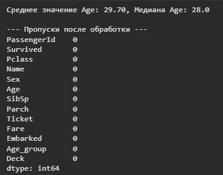
4. Трансформация данных¶
Для улучшения качества анализа и подготовки данных к дальнейшему машинному обучению выполнена серия преобразований:
- Класс обслуживания (
Pclass): Значения числового признака1,2и3заменены на категориальные строки'F'(First Class),'S'(Second Class) и'T'(Third Class). Это позволяет анализировать классы как чисто категориальные признаки. - Обращение (
Title): Из текстового столбца с именамиNameпри помощи регулярного выражения извлечены обращения (например, Mr, Mrs, Miss, Master). - Пол (
Sex): Категориальный признак пола преобразован в числовой формат:male\(\rightarrow\)0,female\(\rightarrow\)1. - Размер семьи (
FamilySize): Создан новый признак, объединяющий количество родственников на борту:FamilySize = SibSp + Parch + 1(где 1 — сам пассажир). - Признак одиночества (
IsAlone): Бинарный признак, принимающий значение1, если пассажир путешествует один (FamilySize == 1), и0в противном случае.
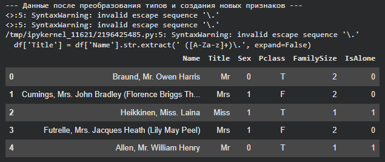
5. Обработка выбросов¶
Выбросы могут сильно исказить результаты статистического анализа и обучения моделей. На данном этапе исследованы два ключевых числовых признака — Fare (стоимость билета) и Age (возраст):
- Диаграмма размаха для
Fare: Построен Boxplot, который выявил наличие большого количества экстремально высоких значений стоимости билетов (выбросов), лежащих за пределами верхней границы IQR-метода (\(Q3 + 1.5 \times IQR\)). - Распределение
Age: Визуализировано распределение возраста с помощью гистограммы с плотностью ядра (KDE). - Метод Винзоризации (Winsorization): Для сглаживания влияния аномалий применена замена значений, превышающих 95-й перцентиль, на величину самого 95-го перцентиля. Это позволило сохранить информацию о высоком тарифе/возрасте, но убрать экстремальные пики, искажающие средние показатели.
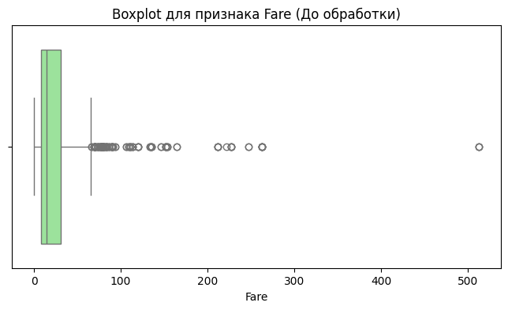
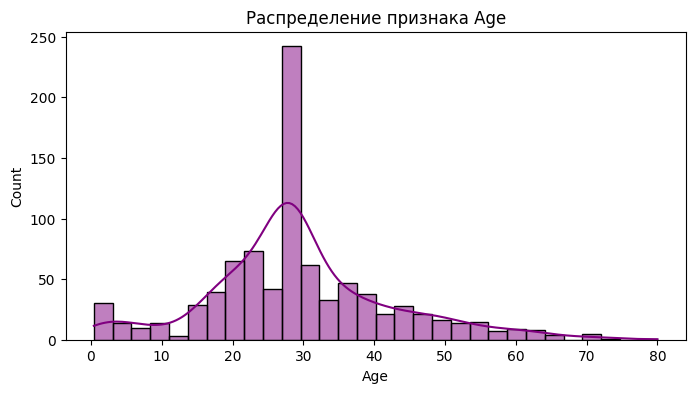
6. Агрегация и анализ¶
После очистки и подготовки данных были проведены группировка и расчет ключевых показателей выживаемости:
- Выживаемость по классам (
Pclass): Пассажиры первого класса (F) имели самый высокий уровень выживаемости (около 62.96%), второго класса (S) — около 47.28%, а третьего класса (T) — самый низкий (около 24.24%). - Выживаемость по полу и классам: Внутри каждого класса женщины демонстрируют кардинально более высокую долю выживших по сравнению с мужчинами.
- Медианный возраст по портам посадки: Анализ показал различие в возрасте пассажиров в зависимости от порта их посадки (все медианные значения после очистки составили 28.0 лет).
- Сводная таблица выживаемости (
Age_groupиIsAlone): Показала, что дети (Child) имеют наивысшую выживаемость, при этом путешествующие в одиночку взрослые и пожилые люди имеют меньший шанс на спасение по сравнению с теми, у кого на борту были семьи.
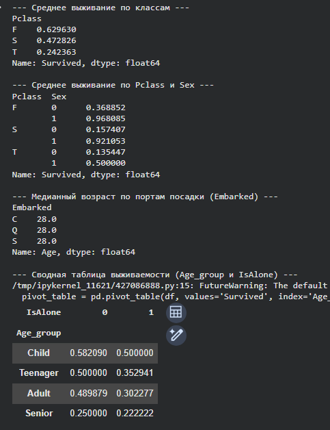
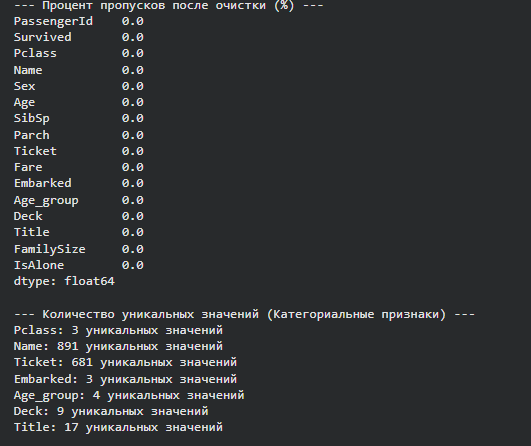
В конце этапа анализа была вычислена описательная статистика после трансформации, получена числовая корреляционная матрица и построена тепловая карта корреляции (Heatmap) между ключевыми числовыми признаками:
- Выявлена сильная отрицательная корреляция между фактом одиночества (
IsAlone) и размером семьи (FamilySize). - Подтверждена заметная положительная корреляция между выживаемостью (
Survived) и женским полом (Sex= 1). - Очищенные и трансформированные данные были сохранены в файл
titanic_cleaned.csvдля последующего использования.
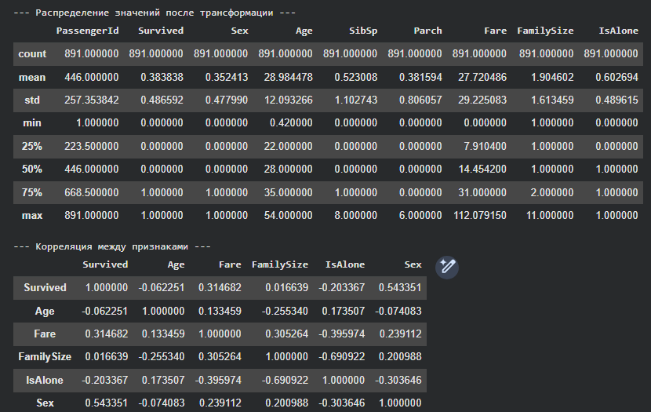
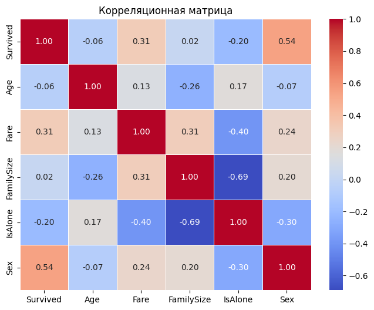
7. Заключение¶
В ходе выполнения лабораторной работы были успешно освоены ключевые концепции анализа данных в pandas:
- Качественная предобработка: Проанализирована структура данных, устранены пропущенные значения с использованием медианы и моды, а также выполнено извлечение признаков из текстовых полей.
- Конструирование признаков (Feature Engineering): Созданы новые значимые переменные (
FamilySize,IsAlone,Title,Deck), которые обогатили датасет и улучшили возможности для выявления закономерностей. - Борьба с аномалиями: Применение метода Винзоризации позволило эффективно нейтрализовать негативное влияние экстремальных выбросов в столбцах
FareиAgeбез потери ценной информации. - Анализ зависимостей: Проведенный агрегационный анализ и построение тепловой карты корреляции позволили сделать важные аналитические выводы (например, о критической роли класса обслуживания и пола в шансах на выживание).
Итоговый очищенный и полностью подготовленный датасет сохранен в файл titanic_cleaned.csv и готов к использованию в алгоритмах машинного обучения.